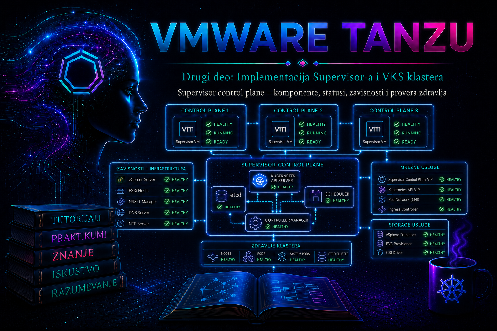

VMware & Tanzu

Prethodna lekcija završila se kontrolisanom aktivacijom Supervisor-a. Zeleni završni status čarobnjaka, međutim, nije dovoljan dokaz da je platforma spremna za produkcioni rad. Administrator mora da razume šta se nalazi iza zbirnog statusa, kako se željeno stanje iz vCenter-a prevodi u Kubernetes objekte i vSphere resurse, koje komponente čine control plane dostupnim i kako se kvar lokalizuje bez nasumičnih promena. Ova lekcija zato posmatra Supervisor kao distribuirani upravljački sistem: zdravlje postoji tek kada su zdravi njegovi podaci, API, kontroleri, čvorovi i spoljne infrastrukturne zavisnosti.
Terminologija zavisi od generacije proizvoda. U dokumentaciji za vSphere 7 i deo vSphere 8 izdanja često se sreću nazivi vSphere with Tanzu, Workload Management i Supervisor Cluster. U aktuelnijoj dokumentaciji koriste se vSphere Supervisor, Supervisor i, u okviru VMware Cloud Foundation 9, vSphere IaaS control plane. Operativni princip ostaje isti, ali se tačan prikaz stranica, nazivi statusa, dostupne metrike i lifecycle postupci moraju proveriti prema build-u vCenter Server-a, ESXi hostova, Supervisor verziji i odgovarajućoj Broadcom Product Interoperability Matrix dokumentaciji.
1. Ishodi učenja i administratorsko pitanje „šta znači zdrav?”
Posle ove lekcije administrator treba da ume da razlikuje dostupnost VM-a od funkcionalnog zdravlja control plane-a, mapira komponentu na njenu zavisnost i dokaz, izvrši neinvazivnu proveru iz vSphere Client-a i autorizovanog Kubernetes konteksta, prepozna kada je problem lokalni, klasterski ili infrastrukturni i pripremi kvalitetan paket dokaza za narednu lekciju o detaljnom troubleshooting-u inicijalizacije.
Supervisor je zdrav kada su istovremeno ispunjena najmanje sledeća svojstva: Kubernetes API je dostupan preko očekivane control-plane adrese; većina, a u normalnom stanju svi control-plane čvorovi prijavljuju Ready; etcd ima kvorum i stabilno čuva stanje; scheduler i controller manager rade; sistemski podovi imaju očekivan broj spremnih replika; ESXi hostovi koji učestvuju u Supervisor-u pravilno su predstavljeni i komuniciraju preko spherelet komponente; vCenter WCP i EAM mogu da usklađuju željeno i stvarno stanje; DNS, NTP, mreža, load balancer, storage i sertifikati ne prekidaju tokove od kojih control plane zavisi.
| Nivo dokaza | Pitanje | Primer dokaza | Šta dokaz ne potvrđuje |
|---|---|---|---|
| Infrastruktura | Da li VM-ovi i hostovi rade? | Power state, host connectivity, datastore i mrežni alarmi | Da Kubernetes API i etcd rade |
| Platforma | Da li vCenter vidi Supervisor kao zdrav? | Supervisor status, Conditions, Config Status i događaji | Da je svaka aplikativna funkcija spremna |
| Kubernetes | Da li čvorovi i sistemski workload-i konvergiraju? | kubectl get nodes, podovi, događaji i condition-i | Da je spoljni DNS, storage ili load balancer bez skrivenih degradacija |
| Usluga | Može li autorizovani klijent da izvrši očekivanu operaciju? | API login, read-only upit, kontrolisana probna operacija | Da će sistem ostati zdrav pod opterećenjem ili tokom kvara |
2. Arhitektura Supervisor control plane-a
Supervisor control plane se u tipičnoj vSphere 7/8 implementaciji sastoji od tri upravljana control-plane VM-a. Oni nisu obične administratorske VM mašine: njihov lifecycle vodi vSphere kroz Workload Control Plane i ESX Agent Manager mehanizme. Tri instance omogućavaju toleranciju pojedinačnog otkaza i održavanje etcd kvoruma. Broj tri ne znači da se svaka komponenta može proizvoljno gasiti niti da su istovremeni radovi na dva čvora bezbedni. Kod tročlanog etcd klastera većina su dva člana; gubitak dva člana ukida mogućnost pouzdanog upisa i praktično zaustavlja upravljačku ravan.
Na control-plane čvorovima rade ključne Kubernetes komponente. kube-apiserver je kontrolisana ulazna tačka za zahteve; etcd je distribuirana baza željenog i opaženog stanja; kube-controller-manager pokreće kontrolne petlje koje usklađuju stvarno stanje sa deklarisanim; kube-scheduler bira odgovarajuće odredište za podove; kubelet na svakom control-plane VM-u održava lokalne statičke podove i prijavljuje stanje čvora. VMware kontroleri i operatori povezuju Kubernetes modele sa vSphere inventarom, VM lifecycle-om, storage-om, mrežom, identitetom i Supervisor servisima.
ESXi host u omogućenom klasteru učestvuje kao Supervisor node preko komponente spherelet, VMware implementacije Kubernetes node-agenta prilagođene hypervisor sloju. Zbog toga host koji je u vCenter-u Connected može u Supervisor-u biti NotReady: infrastruktura za VM-ove radi, ali Kubernetes registracija, sertifikat, komunikacija ili spherelet nisu zdravi. Nasuprot tome, problem jednog workload pod-a ne mora značiti kvar control plane-a. Dobro upravljanje počinje pravilnim određivanjem sloja.
| Komponenta | Uloga | Ključna zavisnost | Tipičan simptom | Primarni dokaz |
|---|---|---|---|---|
kube-apiserver | Autentikacija, autorizacija i Kubernetes API | etcd, sertifikati, FIP/VIP i mreža | Timeout, TLS ili authorization greška za više klijenata | API probe, pod/container stanje, log i događaj |
etcd | Konzistentno čuvanje klasterskog stanja | Kvorum, disk, vreme, mreža 2379/2380 | API je spor ili ne prihvata upise; kontroleri zastaju | Member list i endpoint health, uz podržan postupak |
| Controller manager | Reconciliation kontrolne petlje | API, leader election i RBAC | Objekti ostaju Pending, Provisioning ili Deleting | Condition-i, događaji, controller logovi |
| Scheduler | Raspoređivanje podova | API, resursi, taint/toleration i politike | Podovi ostaju Pending | kubectl describe pod i scheduler događaji |
| Kubelet na CP VM-u | Lokalni node status i statički podovi | Disk, runtime, sertifikati, vreme | Kubelet stopped posting node status | Node Conditions, service status i journal |
spherelet na ESXi-u | Veza hypervisor node-a sa Supervisor-om | WCP, sertifikat, DNS/NTP i mreža | ESXi node NotReady ili ne prihvata podove | Node status, spherelet service i log |
| WCP na vCenter-u | Lifecycle i usklađivanje Supervisor konfiguracije | vCenter servisi, DB, privilegije i hostovi | Konfiguracija ili upgrade ne konvergira | wcpsvc.log, task, event i operation ID |
| EAM | Životni ciklus upravljanih agenata/CP VM-ova | vCenter, host placement i resursi | CP VM nedostaje, ne postavlja se ili se ne oporavlja | EAM agency korelacija i EAM/vpxd logovi |
3. Tok zahteva i lanac zavisnosti
Kada administrator izvrši kubectl get nodes, klijent ne „pita VM-ove” direktno. Kubeconfig određuje control-plane endpoint i sertifikacioni kontekst; mreža i load-balancing mehanizam usmeravaju TLS sesiju ka dostupnom API serveru; API server proverava identitet i RBAC prava; zatim čita stanje iz etcd. Prikazani node condition-i potiču od kubelet/spherelet izveštaja i kontrolera. Jedna komanda zato testira više slojeva, ali ne određuje sama koji sloj je uzrok kvara.
- Klijent razrešava endpoint i uspostavlja mrežnu/TLS vezu.
- API server autentikuje korisnika i autorizuje konkretnu operaciju.
- API server čita ili menja stanje u
etcdbazi. - Kontroleri opažaju promenu i kreiraju vSphere/Kubernetes podoperacije.
- vCenter, EAM, ESXi, mrežni i storage kontroleri sprovode infrastrukturni deo.
- Agenti vraćaju status; kontroler ažurira condition; korisnik vidi konvergenciju ili grešku.
Posledica za troubleshooting je važna: greška na šestom koraku može poticati iz bilo kog prethodnog koraka. Status Pending nije osnovni uzrok, već stanje procesa. Administrator mora da pronađe prvi condition ili događaj koji je prekinuo napredovanje, a zatim da ga koreliše sa vCenter task-om, alarmom i logom u istom vremenskom prozoru.
4. Statusi, Conditions i razlika između signala i dijagnoze
vSphere Client prikazuje zbirno zdravlje Supervisor-a i pojedinačnih kontrolnih elemenata. Tačni nazivi kartica zavise od verzije, ali se provera obično obavlja u prikazu Workload Management/Supervisors, preko stranica Summary, Config Status, Control Plane Node ili odgovarajućih Conditions i Events prikaza. Zabeležite puni tekst poruke, vreme, pogođeni objekat, task ili operation ID i poslednju promenu. Snimak ekrana bez vremena i identiteta objekta nije dovoljan operativni dokaz.
| Status/signal | Operativno značenje | Prvi bezbedni korak | Pogrešan zaključak |
|---|---|---|---|
Ready | Čvor trenutno zadovoljava Kubernetes uslove spremnosti | Proveriti stabilnost kroz vreme i sistemske podove | „Cela platforma je zdrava” |
NotReady | Node agent ne prijavljuje zdravlje ili je condition negativan/nepoznat | describe node, vreme poslednjeg heartbeat-a, događaji | „VM je ugašen” |
SchedulingDisabled | Čvor je cordon-ovan, često zbog održavanja | Proveriti aktivan maintenance/lifecycle task | „Treba odmah izvršiti uncordon” |
Pending | Objekat/pod još nema ispunjene uslove za sledeću fazu | Condition-i i Events, ne restart | „Samo treba sačekati bez vremenskog praga” |
CrashLoopBackOff | Kontejner se ponavlja i pada | Prethodni container log i opis probe/exit code-a | „Problem je u scheduler-u” |
Degraded/Error | Zbirni kontroler je otkrio neispunjeni uslov | Otvoriti detalj condition-a i zavisni objekat | „Zbirna poruka je root cause” |
Unknown | Nema svežeg ili pouzdanog signala | Proveriti vreme, komunikaciju i poslednji heartbeat | „Komponenta sigurno ne radi” |
Kubernetes condition ima tip, status, razlog, poruku i vreme tranzicije. Razlog je mašinski sažetak, poruka pruža kontekst, a lastTransitionTime pomaže da se događaj poveže sa promenom. Condition False nije univerzalno loš: značenje zavisi od tipa. Na primer, MemoryPressure=False je zdravo stanje, dok je Ready=False kvar. Uvek čitajte tip i vrednost zajedno.
5. Infrastrukturne zavisnosti koje menjaju zdravlje control plane-a
- DNS: tačno forward i, gde je zahtevano, reverse razrešavanje za vCenter, ESXi, control-plane i load-balancer adrese. Povremeni DNS kvar proizvodi sporadične timeout-e koji liče na problem aplikacije.
- NTP: usklađeno vreme na vCenter-u, ESXi hostovima, mrežnim komponentama i control-plane čvorovima. Odstupanje vremena remeti TLS validaciju, tokene, leader election i korelaciju logova.
- Mreža: VLAN/segment, routing, firewall, MTU, port grupe, uplink redundansa i control-plane FIP/VIP. ICMP uspeh ne dokazuje da su TCP port i povratna ruta ispravni.
- Load balancer: dostupnost API/control-plane endpoint-a i pravilno mapiranje backend-a. Implementacija zavisi od izabranog mrežnog modela i verzije; ne primenjujte NSX, HAProxy ili NSX Advanced Load Balancer korake na drugi model.
- Storage: dostupnost datastore-a i storage policy-ja za upravljačke VM-ove, dovoljan kapacitet i prihvatljive latencije. Uključen VM sa punim sistemskim diskom nije zdrav control-plane čvor.
- Compute i placement: dovoljan CPU/RAM, DRS/HA funkcionalnost, host kompatibilnost i failure-domain raspored. Tri CP VM-a na jednom failure domenu ne obezbeđuju stvarnu otpornost na taj kvar.
- Identitet i sertifikati: važeći lanac poverenja, SAN vrednosti, rok važenja, automatska rotacija i potrebne privilegije WCP servisnih identiteta.
- vCenter servisi i baza: WCP, EAM, vpxd, SSO/STS i baza moraju imati dovoljno prostora i funkcionisati. Restart celog vCenter-a nije početni dijagnostički korak.
6. Slojevita, read-only provera zdravlja
Redosled je namerno od najmanje invazivnog ka dubljem. Najpre definišite vremenski prozor i obim: jedan pod, jedan namespace, jedan ESXi node, jedan control-plane VM ili cela platforma. Zatim proverite poslednju promenu, vSphere alarme i taskove, zbirno stanje Supervisor-a, Kubernetes API, čvorove, sistemske workload-e i events. Tek kada dokazi opravdaju hipotezu prelazi se na logove ili direktan pristup čvoru.
6.1. Provera u vSphere Client-u
- Otvorite Supervisor/Workload Management prikaz i zabeležite naziv Supervisor-a, verziju, zbirni status i vreme poslednje tranzicije.
- Otvorite detalje control-plane i host čvorova. Uporedite broj očekivanih i vidljivih čvorova, power state, placement i pojedinačne poruke.
- Pregledajte Recent Tasks, Events i aktivne alarme za Supervisor, klaster, CP VM-ove, ESXi hostove, mrežu i datastore.
- Proverite da li je u toku activation, remediation, upgrade, certificate rotation ili maintenance operacija. Ne pokrećite konkurentnu lifecycle promenu.
- Zabeležite operation ID, MoRef/VM ID ili EAM agency identitet kada je prikazan; oni povezuju UI događaj sa logovima.
6.2. Kubernetes provera iz autorizovanog Supervisor konteksta
Sledeće komande su read-only i bezbedne su za produkcionu dijagnostiku kada se izvršavaju sa odobrenog administratorskog računara i najmanjim potrebnim RBAC pravima. Tačan login postupak i dozvoljeni resursi zavise od verzije i dodeljene uloge. Ne delite kubeconfig; čuvajte ga sa ograničenim dozvolama i uklonite privremene sesije prema politici.
# Potvrdite koji endpoint, klaster i identitet koristite.
kubectl config current-context
kubectl config view --minify
# Kratak test dostupnosti API-ja; ne menja stanje.
kubectl cluster-info
# Pregled node spremnosti, uloga, verzija i adresa.
kubectl get nodes -o wide
# Conditions, taints, kapacitet, događaji i vreme heartbeat-a jednog čvora.
kubectl describe node <node-name>Očekivano zdravo stanje je dostupan API, svi očekivani čvorovi prisutni i Ready, bez neočekivanih pressure condition-a i bez starih heartbeat vrednosti. Verzije među komponentama moraju odgovarati podržanom lifecycle stanju; kratkotrajna razlika tokom kontrolisanog upgrade-a može biti očekivana, ali trajna razlika zahteva proveru plana nadogradnje.
# Sistemski podovi i njihova raspodela po čvorovima.
kubectl get pods -A -o wide
# Samo podovi koji nisu u stabilnoj Running/Succeeded fazi.
kubectl get pods -A --field-selector=status.phase!=Running,status.phase!=Succeeded
# Najnoviji događaji; korelišite vreme, objekat, reason i message.
kubectl get events -A --sort-by=.metadata.creationTimestamp
# Detalj pogođenog pod-a pre bilo kakvog restarta.
kubectl describe pod -n <namespace> <pod-name>
# Log tekuće instance i, kod restartovanja, prethodne instance.
kubectl logs -n <namespace> <pod-name> -c <container-name> --since=30m
kubectl logs -n <namespace> <pod-name> -c <container-name> --previous --since=30mFilter faze je pomoćni prikaz, ne potpuna dijagnoza: pod može biti Running, a da kontejner nije Ready ili da se često restartuje. Zato proverite kolone READY i RESTARTS, detalje probe-a i condition-e. Događaji imaju ograničeno vreme zadržavanja; prikupljajte ih rano. Log bez vremenske zone, namespace-a, pod-a i container-a gubi dokaznu vrednost.
6.3. Strukturisan izlaz za preciznu korelaciju
kubectl get nodes -o jsonpath='{range .items[*]}{.metadata.name}{"\t"}{range .status.conditions[?(@.type=="Ready")]}{.status}{"\t"}{.reason}{"\t"}{.lastTransitionTime}{"\n"}{end}{end}'supervisor-control-plane-vm-1 True KubeletReady 2026-07-20T08:14:32Z
supervisor-control-plane-vm-2 True KubeletReady 2026-07-20T08:16:05Z
supervisor-control-plane-vm-3 True KubeletReady 2026-07-20T08:17:41ZOvaj primer prikazuje očekivani oblik, ne garantovane nazive čvorova ili reason vrednosti. JSONPath izraz samo čita podatke. Ako vrati prazan red, proverite strukturu sa kubectl get node <ime> -o yaml; nemojte zaključiti da condition ne postoji samo zato što filter nije odgovarao verziji ili objektu.
7. Logovi, lokacije i korelacija
| Izvor | Pristup/lokacija | Šta se traži | Korelacioni ključ |
|---|---|---|---|
| WCP | VCSA: /var/log/vmware/wcp/wcpsvc.log i rotirani logovi | Lifecycle, reconciliation, host/node i certificate greške | Supervisor MoRef, operation ID, vreme |
| EAM | VCSA: /var/log/vmware/eam/ | Agency, agent/CP VM deployment i remediation | EAM agency i VM ID |
| vpxd | VCSA: /var/log/vmware/vpxd/ | Task, privilege, placement i vCenter operacije | MoRef, task/op ID, korisnik |
| Spherelet | ESXi: odgovarajući /var/log/spherelet* ili bundle za verziju | Registracija, heartbeat, sertifikat i runtime | Host/node ime i timestamp |
| Kubernetes workload | kubectl logs, describe, events | Probe, restart, RBAC, API i dependency greške | Namespace, pod UID, container, vreme |
| CP VM OS/container | Direktan pristup samo po podržanom KB/support postupku | Kubelet, runtime, disk i statički control-plane podovi | Node, container ID i vreme |
Za tekstualne logove koristite uski vremenski prozor i poznat identifikator. Sledeći primer je read-only, ali se izvršava na VCSA kao nalog sa odgovarajućim privilegijama; root pristup mora biti odobren i auditovan. Prilagodite datum i identifikator, a ne pretražujte nekontrolisano kompletan višegigabajtni skup.
# Na VCSA: korelacija jednog Supervisor objekta ili operation ID-a.
grep -Rni --include='*.log*' '<operation-id-or-domain-c-id>' \
/var/log/vmware/wcp /var/log/vmware/eam /var/log/vmware/vpxd 2>/dev/nullPrvo uskladite vremenske zone. Potom čitajte nekoliko redova pre prve greške: kasniji context deadline exceeded često je posledica ranijeg DNS, TLS, RBAC, storage ili mrežnog problema. Ponavljanje iste poruke ne znači više uzroka; pronađite prvu tranziciju iz zdravog u nezdravo stanje.
8. Posebna provera etcd zdravlja i zašto nije rutinska komanda
etcd je najosetljivija komponenta control plane-a. Direktna provera se radi tek kada API simptomi, node stanje i zvanična procedura opravdaju ulazak u CP VM. Broadcom KB za Supervisor navodi etcdctl member list i cluster endpoint health kao dijagnostičke komande, ali pristup root nalogom u upravljani control-plane VM nije uobičajen administratorski tok. Sesija treba da bude read-only, vremenski ograničena, auditovana i izvedena prema KB-u ili uz Technical Support. Ručno uklanjanje člana, menjanje manifesta, brisanje podataka ili prisilno formiranje klastera može trajno uništiti Supervisor.
# SAMO u podržanoj dijagnostičkoj sesiji na Supervisor CP VM-u.
etcdctl member list -w table
etcdctl --cluster=true endpoint health -w table
# Lokalno stanje etcd kontejnera i prethodnih pokušaja.
crictl ps --name etcd
crictl ps -a --name etcdZdrav obrazac:
- očekivani članovi su navedeni bez neočekivanih duplikata;
- većina endpoint-a, a normalno svi, odgovara healthy=true;
- aktivan etcd container je Running;
- nema trajnih timeout-a između članova.Portovi 2379 i 2380 imaju različite uloge za klijentsku i peer komunikaciju; uspešna lokalna konekcija ne dokazuje komunikaciju između članova. Ako svaki čvor lokalno odgovara, a međusobne veze ne rade, osnovni uzrok je verovatnije mreža, firewall ili MTU nego sam etcd. Nikada ne „popravljajte kvorum” brisanjem podataka. Sačuvajte output, support bundle i eskalirajte.
9. Tipični obrasci kvara i bezbedne odluke
| Simptom i obim | Hipoteze | Dokazi | Bezbedna korekcija/eskalacija |
|---|---|---|---|
Jedan CP node NotReady; API radi | Kubelet, disk, runtime, host ili mreža tog čvora | Node condition/heartbeat, VM/host alarm, disk i kubelet dokaz po KB-u | Ne gasiti druge CP čvorove; prikupiti bundle; podržana remediation |
Svi kubectl upiti timeout-uju | Endpoint/load balancer, API, etcd kvorum, certifikat ili routing | Više klijenata, TCP/TLS test, vSphere status, WCP događaji | Otkloniti potvrđenu spoljnu zavisnost ili eskalirati pre menjanja CP-a |
ESXi node NotReady, VM workload-i rade | spherelet, sertifikat, WCP komunikacija | Node status, service status, spherelet/WCP log | Primeniti tačan KB za build; ne reinstalirati agent ručno |
Sistemski pod CrashLoopBackOff | Konfiguracija, dependency, secret/certifikat, resource/disk pritisak | describe, current i --previous log, restarts | Ne brisati nasumično; korigovati potvrđenu zavisnost podržanim lifecycle tokom |
Objekti ostaju u Provisioning | Kontroler ne konvergira, quota, placement, mreža, storage | Condition lanac, events, WCP/vpxd task i objekti zavisnosti | Otkloniti prvi neuspešan preduslov; ponoviti samo idempotentnu operaciju |
| CP VM root filesystem 100% | Akumulirani logovi/slike/stari resursi | df -h po zvaničnom KB-u, kubelet poruka | Isključivo Broadcom cleanup KB/script ili podrška; ne ručno rm |
Sertifikat/rotacija prijavljuje Unauthorized | Istek, lanac poverenja, vreme ili neuspešna spherelet rotacija | Validity/SAN, NTP, WCP i spherelet logovi | Verzijski odgovarajući certificate workflow; ne zaobilaziti TLS proveru |
etcd članstvo ili podatke bez izričitog Broadcom KB postupka ili instrukcije Technical Support-a.
10. Praktikum – uspostavljanje baseline-a i dijagnostika kontrolisane degradacije
10.1. Cilj, topologija i preduslovi
Cilj vežbe je da tim izradi ponovljiv health-check zapis i pravilno razvrsta simulirani incident bez promene Supervisor internih objekata. Laboratorija sadrži jedan vCenter Server, vSphere klaster sa aktivnim Supervisor-om, tri upravljana CP VM-a, najmanje tri ESXi hosta, funkcionalan DNS/NTP, odabrani mrežni/load-balancer model i administratorsku radnu stanicu sa odgovarajućim kubectl dodatkom i Supervisor kontekstom.
Potrebni su vSphere read-only pristup proširen pravom pregleda Workload Management statusa i Kubernetes nalog koji može da čita nodes, pods i events u potrebnom opsegu. Root na VCSA/ESXi ili CP VM-u nije potreban za osnovnu vežbu. Rizik je nizak dok se koriste samo GET/list/describe/log operacije. Sve eksperimente sa gašenjem mreže, hosta ili VM-a izostavite iz deljene ili produkcione sredine.
10.2. Vežba A – baseline zdravog sistema
- Zabeležite build vCenter-a i ESXi-a, Supervisor/Kubernetes verziju, mrežni model, broj CP VM-ova i broj ESXi node-ova.
- U vSphere Client-u potvrdite zbirni status, pojedinačne node statuse, odsustvo kritičnih alarma i odsustvo aktivne lifecycle operacije.
- Izvršite read-only komande iz odeljka 6. Sačuvajte izlaze sa UTC vremenom i nazivom konteksta.
- Prebrojte podove koji nisu spremni i objasnite svaki očekivani
Completed, init ili tranzicioni status. „Nula ne-Running podova” nije univerzalni kriterijum. - Odaberite jedan CP node i jedan ESXi node; iz
describeizlaza zabeležiteReady, pressure condition-e, heartbeat i događaje. - Sačuvajte baseline kao vremenski označen incident artefakt, bez tokena, lozinki i privatnih ključeva.
Očekivani rezultat: API je dostupan, očekivani čvorovi su prisutni i spremni, sistemski podovi imaju očekivane replike, nema neobjašnjenih učestalih restartovanja, a vSphere i Kubernetes prikaz nemaju kontradiktorne neistražene signale. Kriterijum završetka je potpisan baseline sa verzijama, vremenom, kontekstom i dokazima, ne samo ocena „zeleno”.
10.3. Vežba B – bezbedna simulacija incidenta pomoću istorijskog scenarija
Najbezbednija simulacija ne menja platformu. Instruktor bira raniji događaj ili priprema tekstualni scenario: „jedan ESXi node je NotReady, VM-ovi na hostu rade, a ostali Supervisor čvorovi i API su dostupni”. Tim ne dobija unapred uzrok. Zadatak je da formira hipoteze i napiše redosled provera.
- Simptom: zabeležite tačan status, objekat, početak i učestalost.
- Obim: proverite da li je pogođen jedan ESXi node, CP node, namespace ili ceo Supervisor.
- Posledica: navedite šta ne radi i šta još radi; ne poistovećujte degradaciju sa potpunim prekidom.
- Hipoteze: rangirajte
sphereletservice/process, sertifikat/rotaciju, mrežu, vreme i WCP registraciju. - Dokazni plan: node describe i heartbeat; vSphere host/task/alarm; potom WCP i spherelet log u istom prozoru.
- Privremena mera: zaustaviti nove promene i održavanje na pogođenom hostu; ne restartovati nasumično servise.
- Trajna korekcija: odabrati tek posle potvrde uzroka i mapiranja na KB za tačan build.
- Validacija: node ponovo
Ready, heartbeat svež, bez ponovne greške u posmatranom periodu i workload stanje stabilno.
10.4. Vežba C – kontrolisana dijagnostika jednog ne-spremnog sistemskog pod-a
Koristite samo postojeći laboratorijski pod koji je instruktor označio kao bezbedan za posmatranje ili unapred pripremljene izlaze. Ne brišite Supervisor sistemski pod radi „simulacije”.
LAB_NS='<namespace>'
LAB_POD='<pod-name>'
kubectl get pod -n "$LAB_NS" "$LAB_POD" -o wide
kubectl describe pod -n "$LAB_NS" "$LAB_POD"
kubectl logs -n "$LAB_NS" "$LAB_POD" --all-containers=true --since=20m
kubectl logs -n "$LAB_NS" "$LAB_POD" --all-containers=true --previous --since=20mRazdvojite scheduling problem (nema dodeljenog node-a), image/configuration problem (container se ne pokreće), readiness problem (radi, ali ne prima saobraćaj) i runtime crash. Očekivani rezultat vežbe nije nužno oporavak, već dokazano svrstavanje kvara, identifikovan sledeći vlasnik komponente i bezbedna korektivna preporuka. Ako prava ne dozvoljavaju log, zabeležite RBAC zabranu kao ograničenje dokaza; nemojte tražiti šira trajna prava samo radi vežbe.
10.5. Incident response, recovery i rollback
Za realan incident primenite sledeći tok: otvorite zapis sa UTC vremenom; zamrznite nepovezane promene; sačuvajte UI status, events, conditions i logove; postavite jednu proverljivu hipotezu; izvedite najmanje invazivnu proveru; odredite vlasnika zavisnosti; primenite samo dokumentovanu korekciju; ponovite isti health-check; pratite stabilnost; dokumentujte neposredni i osnovni uzrok. Ako korekcija menja konfiguraciju, rollback je povratak na prethodno dokumentovanu podržanu vrednost kroz isti lifecycle interfejs, ne ručno menjanje generisanih Kubernetes objekata.
U ovoj lekciji nema opravdanog laboratorijskog rollback-a control-plane internog stanja, jer vežbe ne menjaju stanje. Ako je tokom realnog incidenta izvršena pogrešna promena, zaustavite dalje akcije, sačuvajte audit trag i uključite Broadcom podršku; pokušaj skrivanja ili „ispravljanja” ručne izmene može ukloniti ključne dokaze.
11. Administratorske prakse
- Definišite baseline i pragove pre incidenta: dostupnost API-ja, broj Ready čvorova, restart trend, resursni pritisak, storage kapacitet, certificate expiry i lifecycle stanje.
- Kombinujte vSphere i Kubernetes signale. Jedan zeleni dashboard ili jedna uspešna komanda nisu dovoljni.
- Čuvajte događaje i logove centralno u vremenski sinhronizovanom sistemu, uz kontrolu pristupa i retenciju usklađenu sa politikom.
- Koristite najmanja potrebna prava. Kubeconfig, support bundle i logovi mogu sadržati osetljive adrese, identitete i tokene.
- Ne obavljajte konkurentne activation, upgrade, certificate, network ili maintenance promene bez proverene sekvence i matrice interoperabilnosti.
- Ne tretirajte automatsku rekreaciju CP VM-a kao zamenu za root-cause analizu; prvo sačuvajte dokaze i proverite da li lifecycle kontroler uopšte može bezbedno da konvergira.
- Za VCF 9.x i novije proverite tačnu dokumentaciju za konkretno izdanje: monitoring integracije, nazivi objekata i podržani update redosled nisu identični starijim vSphere 7/8 postupcima.
- Runbook mora sadržati stop-uslove: gubitak
etcdkvoruma, dva ne-spremna CP čvora, sumnju na korupciju podataka, ručnu promenu upravljanog objekta ili nejasan upgrade mismatch.
12. Završna kontrolna tačka
Lekcija je savladana kada administrator može, bez menjanja platforme, da:
- objasni uloge tri control-plane VM-a, API servera,
etcd-a, kontrolera, scheduler-a, kubelet-a,spherelet-a, WCP-a i EAM-a; - razlikuje VM power/host connectivity, Supervisor zbirni status, Kubernetes
Readyi funkcionalnu dostupnost usluge; - prikaže aktuelni kontekst, nodes, sistemske podove, events i condition-e read-only komandama;
- poveže simptom sa DNS, NTP, mrežom, load balancer-om, storage-om, resursima, identitetom ili sertifikatima;
- koreliše vSphere task/event sa WCP, EAM, vpxd i Kubernetes dokazima u istom vremenskom prozoru;
- razdvoji simptom, obim, posledicu, neposredni uzrok, osnovni uzrok, workaround, trajnu meru i validaciju;
- prepozna stop-uslov i eskalira pre rizične promene
etcd-a, EAM agency-ja ili upravljanog CP VM-a; - napravi proverljiv baseline i incident zapis bez izlaganja kredencijala.
Zaključak
Supervisor control plane nije skup od tri uključena VM-a, već distribuirani lanac API-ja, stanja, kontrolnih petlji, node agenata i vSphere infrastrukturnih servisa. Zdravlje se zato ne dokazuje jednim zelenim indikatorom. Pouzdan administrator počinje obimom i vremenom incidenta, prikuplja read-only dokaze kroz više slojeva, tumači condition-e umesto da reaguje na etiketu statusa, proverava zavisnosti i menja stanje tek kada je uzrok potvrđen.
Najvažnija operativna disciplina jeste znati gde prestaje redovna administracija. Direktno menjanje Supervisor control-plane VM-a, etcd članstva, EAM agency-ja ili generisanih sistemskih objekata može pretvoriti parcijalnu degradaciju u gubitak platforme i podrške. Ova lekcija priprema administratora da prepozna zdravo i degradirano stanje i sačuva dokaze; naredna lekcija koristiće taj model za sistematsku validaciju i troubleshooting neuspele inicijalizacije.